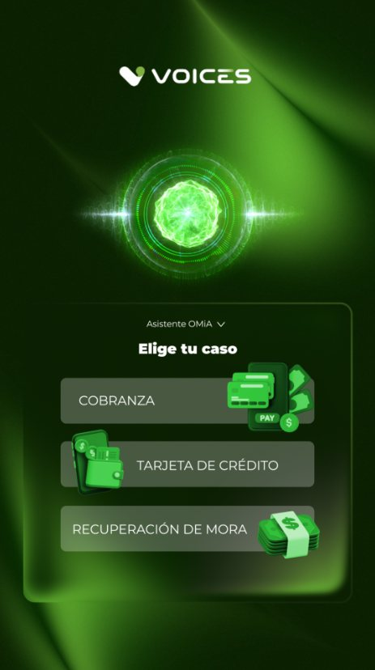
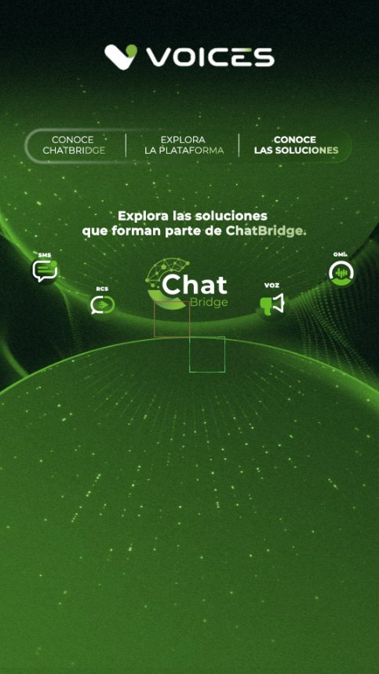

Kioscos táctiles para un evento
Desarrollé en Unity dos interactivos para pantalla vertical con marco infrarrojo: un quiz guiado por video en tres capas y un selector de videos con menús configurables. Se presentaron el 7 de octubre tras dos semanas de desarrollo.
Están hechos para no trabarse: detectan videos congelados, filtran toques dobles, regresan solos a la pantalla de inicio y su contenido se cambia en JSON sin recompilar.